CloudNet@에서 진행하고 있는 CI/CD Study 8주차에는 Vault의 HA(High Availability)에 대해 다루었습니다.
구성 방법의 이론적 부분은 단순했으나, 예상한 구성 방법과 달라서 제가 나중에 참고하려고 부연설명을 해두려고 합니다.
더불어 대시보드에서 Vault 관련 메트릭을 보고 싶어서, Datadog과 연동하여 관측하였습니다.
0. 실습 환경 준비
해당 구성들은 아래 GitHub에 탑재되어 있습니다.
https://github.com/kkumtree/ci-cd-cloudnet-study 의 8w 폴더 Helm v4 출시 후 한 달도 안된 시점에 작성되었기에, v3에 호환되는 차트 버전을 명시하여 배포했습니다.
kind 배포와 ingress-nginx, 그리고 vault-worker 까지 배포하면, 아래와 같은 구성도가 됩니다.
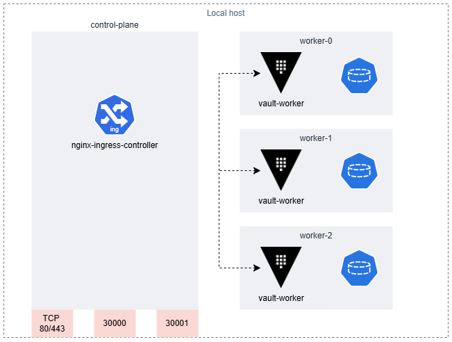
(1-1) kind의 경우 (8w/shells/kind/up-kind.sh)
- control-plane 하나 (containerPort:hostPort)
- 80:80, 443:443 (TCP)
- 30000:30000, 30001
- vault-worker간 raft 알고리즘을 위한, 3개의 worker 노드
(1-2) ingress-nginx의 경우 (8w/shells/kind/up-kind.sh)
- kind용으로 배포하며 해당 컨트롤러가 control-plane에 배포됩니다.
- nodeSelecter:
ingress-ready:true - SSL paththrough 활성화
(배포 단순 확인을 위해,
traefik/whoami서비스 추가 배포)
(2) vault-worker의 경우 (8w/shells/vault/vault-ha.sh)
- HA모드 활성화 및 replica 3개 구성
- raft 및 ui 활성화 / TLS 비활성화
- Port: 8200(API), 8201(vault-worker간 통신)
- kubernetes 서비스 등록
- readinessProbe 활성화
- PVC: raft 데이터 저장 (10Gi)
- UI (NodePort)
- externalPort: 8200
- serviceNodePort: 300000
- injector 비활성화
1. Vault 클러스터 구성
각 worker 노드에 배포된 replica pod들에서 로그를 반복적으로 확인할 수 있습니다.
또한 구성이 완료되지 않은 상태이기 때문에, running 상태가 아님을 확인할 수 도 있습니다. (readinessProbe)
[INFO] core: security barrier not initialized
[INFO] core: seal configuration missing, not initialize
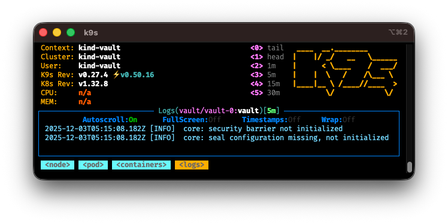
그래서 아래와 같은 절차를 밟습니다.
- 3개의 Pod 중 하나를 선택하여, 터미널에서 Vault 클러스터 초기화(initialize)를 합니다.
- 출력되는 Unseal Key 5개와 Initial Root Token 1개를 메모해둡니다.
- Unseal Key 3개를 골라, Vault를 Unseal 상태로 바꿉니다. (다수결 충족 및 리더로 선출)
- 해당 Pod에서 확인되는 Vault HA Cluster 주소를 메모해둡니다.
- 남은 Pod의 터미널에서는 초기화하지 않습니다.
- 초기화한 Vault Pod에서 확인된 Cluster 주소를 기반으로 Cluster에 Join 합니다.
- Vault를 Unseal 상태로 만듭니다. (1번에서 확인된 Unseal Key 사용)
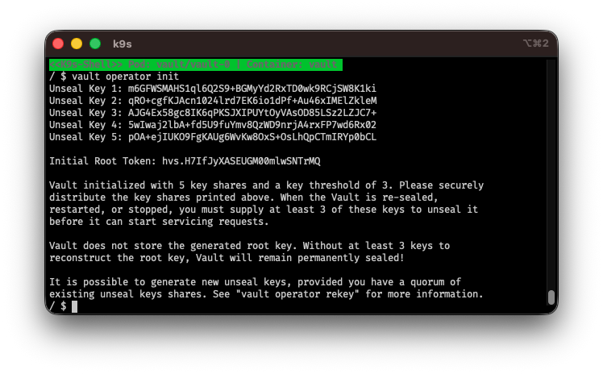
이를 도식화하면 아래와 같이 됩니다.
(1-하나의 Pod를 초기화)
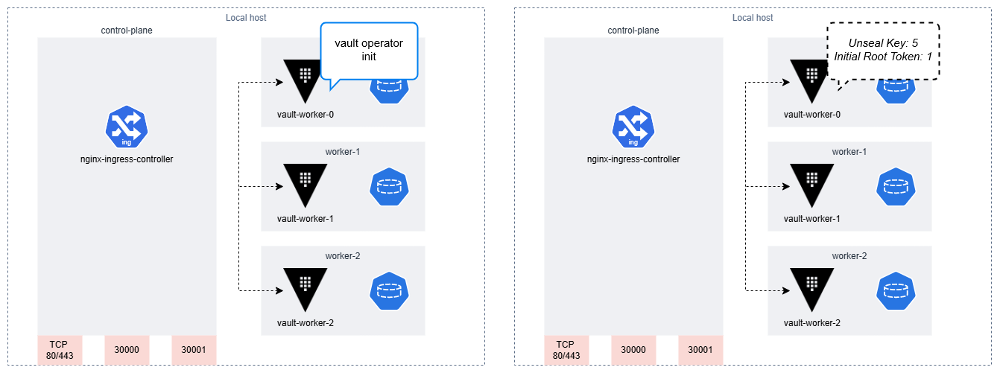
(2-해당 Pod에서 Unseal 시행)
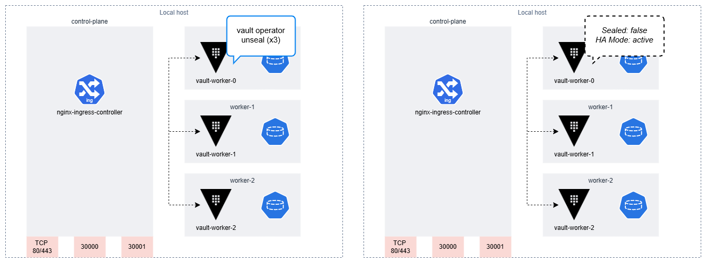
(3-남은 Pod에서 초기화한 Pod로 Join)
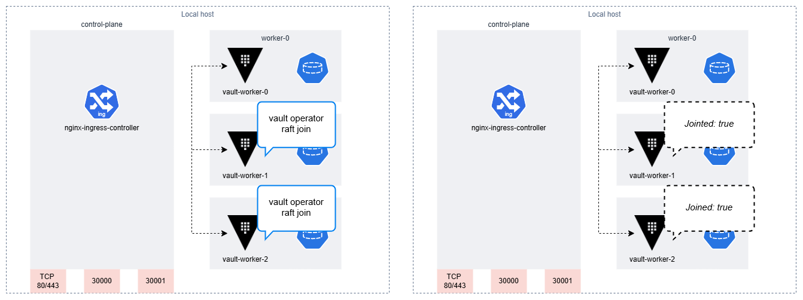
(4-남은 Pod에서 Unseal 시행)
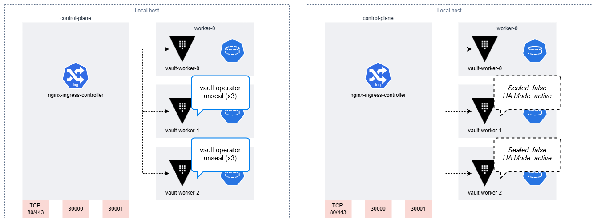
각 Pod에서 Unsealed 시행 시 다음과 같이 확인할 수 있습니다.
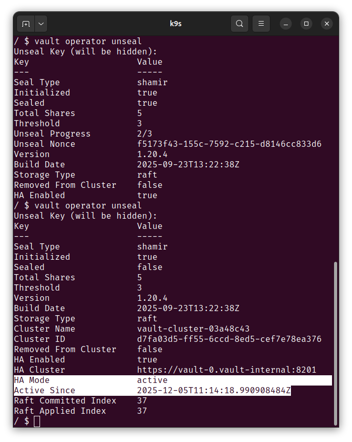
vault-0 Pod가 Unsealed 되었을 시, 아래와 같이 해당 Pod만 Ready 상태가 됩니다.
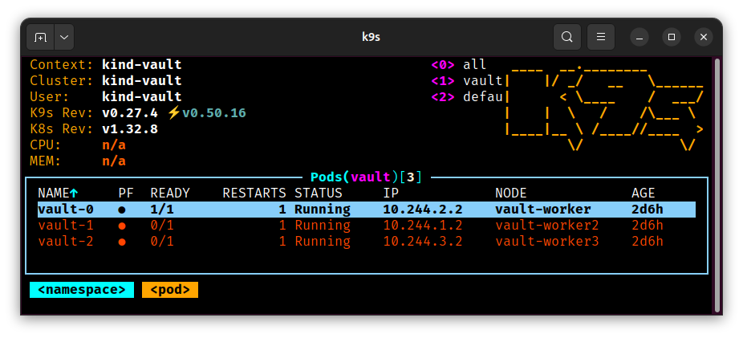
다른 두 Pod에서 join 후, 똑같이 Unsealed를 하면 이 또한 Ready 상태가 됩니다.
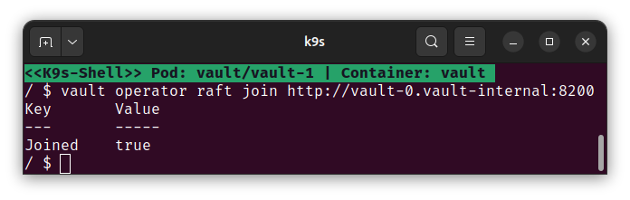
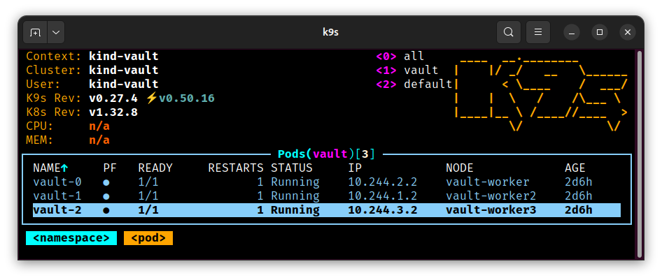
이후 vault-worker Pod 외부에서 vault와 통신하려면, 아래와 같이 두 변수를 설정해야합니다.
VAULT_ROOT_TOKEN: 초기화 시 확인된 root tokenVAULT_ADDR:'http://localhost:30000'(ui.ServiceNodePort)
여기서 눈치챘겠지만, vault cli는 HTTP API 호출을 기반으로 한다는 것을 알 수 있습니다.
그러면 아래와 같이 leader 1개, follower 2개의 raft 피어목록을 확인할 수 있습니다.
# vault login
vault operator raft list-peers
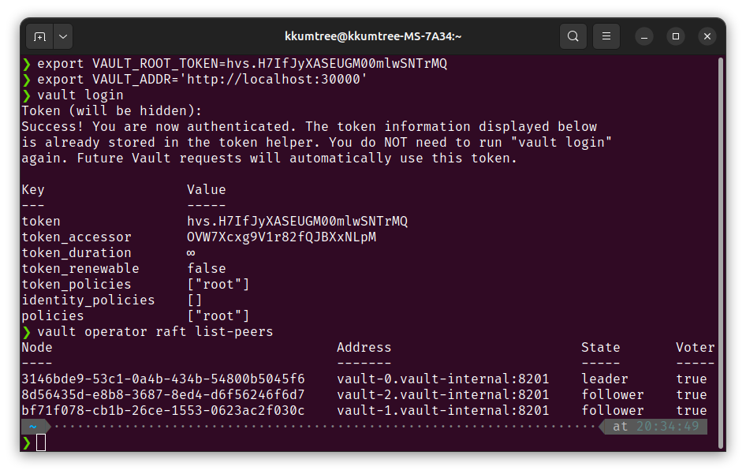
2. Vault API 간단 맛보기
이번에는 Vault CLI를 통해 비밀을 저장해보도록 하겠습니다.
(1) mysecret 경로로 secret 활성화
vault secrets enable -path=mysecret kv-v2
(2) 하위 logins/study에 샘플 시크릿 저장
vault kv put mysecret/logins/study \
username="demo" \
password="p@ssw0rd"
(3) 입력된 시크릿 확인
vault kv get mysecret/logins/study
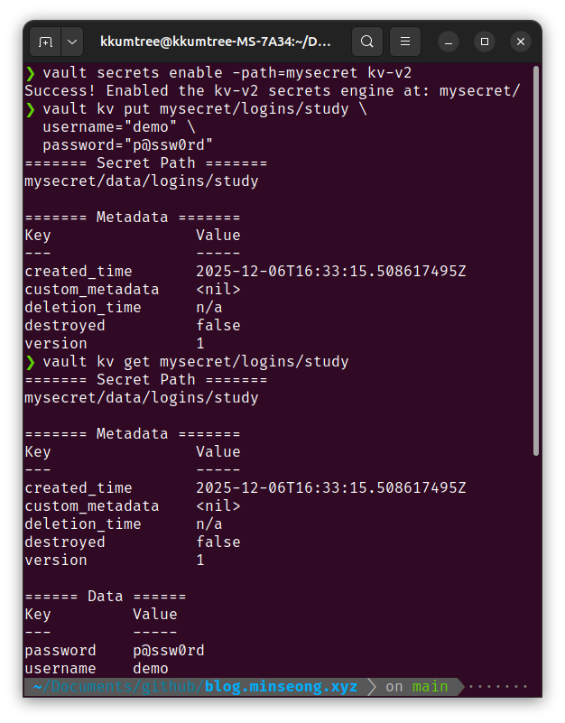
세부 경로는 list 명령어를 통해서도 확인할 수 있습니다.
vault kv list mysecret
vault kv list mysecret/logins
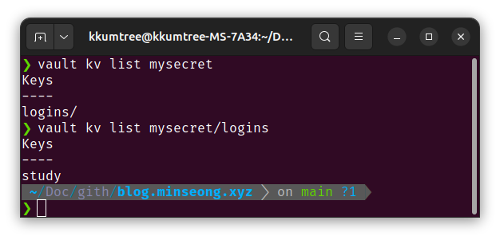
curl을 통한 API 요청으로도 확인할 수 있습니다.
curl -s --header "X-Vault-Token: $VAULT_ROOT_TOKEN" http://localhost:30000/v1/mysecret/data/logins/study | jq
curl -s --header "X-Vault-Token: $VAULT_ROOT_TOKEN" http://localhost:30000/v1/mysecret/data/logins/study \
| jq -r .data.data.username
curl -s --header "X-Vault-Token: $VAULT_ROOT_TOKEN" http://localhost:30000/v1/mysecret/data/logins/study \
| jq -r .data.data.password
export USER_NAME=$(curl -s --header "X-Vault-Token: $VAULT_ROOT_TOKEN" http://localhost:30000/v1/mysecret/data/logins/study | jq -r .data.data.username)
export PASSWORD=$(curl -s --header "X-Vault-Token: $VAULT_ROOT_TOKEN" http://localhost:30000/v1/mysecret/data/logins/study | jq -r .data.data.password)
echo $USER_NAME $PASSWORD
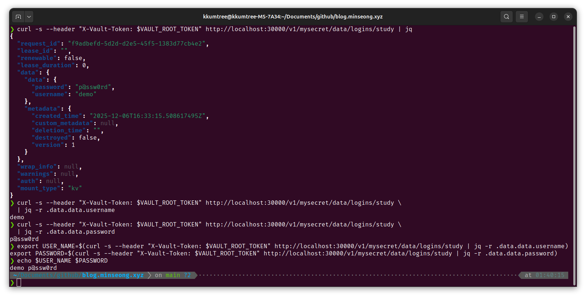
UI로도 확인합니다.
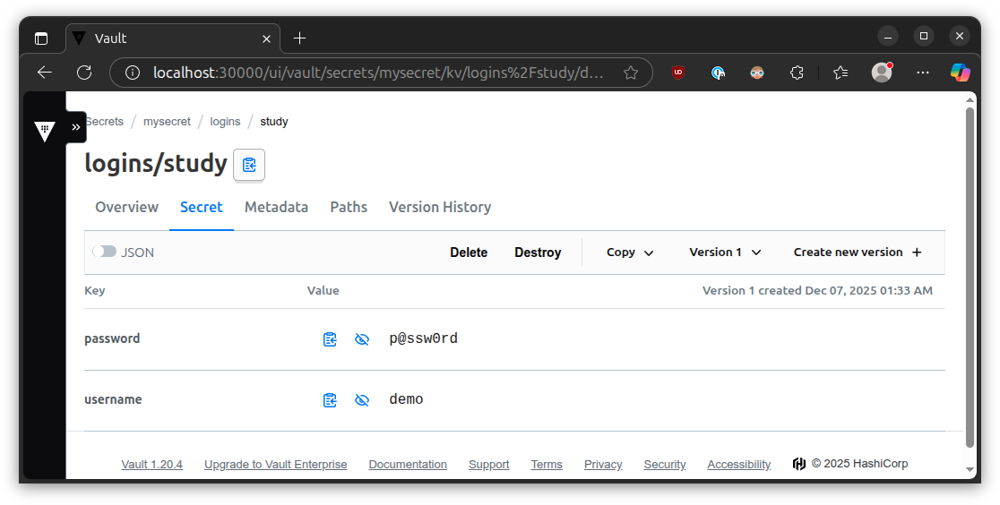
3. OpenLDAP 연동해보기
(1) 환경 구성
8w/shells/openldap/openldap.sh
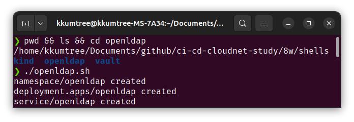
아래와 같은 구조로 구성해보겠습니다.
dc=example,dc=org
├── ou=people
│ ├── uid=alice
│ │ ├── cn: Alice
│ │ ├── sn: Kim
│ │ ├── uid: alice
│ │ └── mail: alice@example.org
│ └── uid=bob
│ ├── cn: Bob
│ ├── sn: Lee
│ ├── uid: bob
│ └── mail: bob@example.org
└── ou=groups
├── cn=devs
│ └── member: uid=bob,ou=people,dc=example,dc=org
└── cn=admins
└── member: uid=alice,ou=people,dc=example,dc=org
OpenLDAP 컨테이너에 접근하여, 생성합니다.
kubectl -n openldap exec -it deploy/openldap -c openldap -- bash
(1) OU(Orgnization Unit) 생성
cat <<EOF | ldapadd -x -D "cn=admin,dc=example,dc=org" -w admin
dn: ou=people,dc=example,dc=org
objectClass: organizationalUnit
ou: people
dn: ou=groups,dc=example,dc=org
objectClass: organizationalUnit
ou: groups
EOF
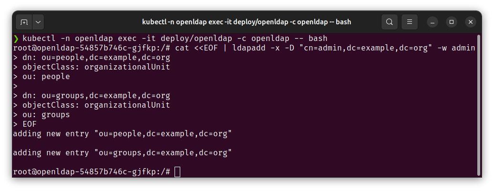
(2) user(inetOrgPerson) 추가
cat <<EOF | ldapadd -x -D "cn=admin,dc=example,dc=org" -w admin
dn: uid=alice,ou=people,dc=example,dc=org
objectClass: inetOrgPerson
cn: Alice
sn: Kim
uid: alice
mail: alice@example.org
userPassword: alice123
dn: uid=bob,ou=people,dc=example,dc=org
objectClass: inetOrgPerson
cn: Bob
sn: Lee
uid: bob
mail: bob@example.org
userPassword: bob123
EOF
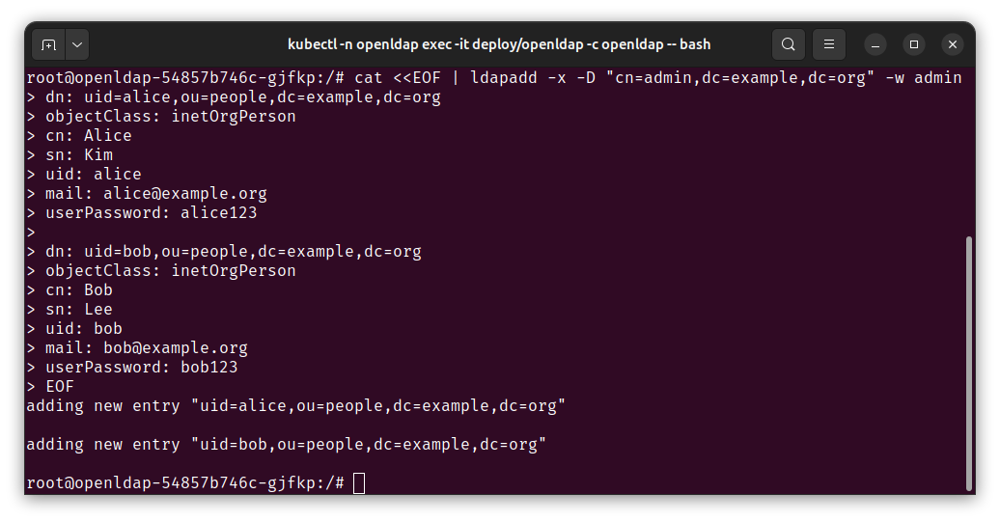
(3) group(groupOfNames) 추가
cat <<EOF | ldapadd -x -D "cn=admin,dc=example,dc=org" -w admin
dn: cn=devs,ou=groups,dc=example,dc=org
objectClass: groupOfNames
cn: devs
member: uid=bob,ou=people,dc=example,dc=org
dn: cn=admins,ou=groups,dc=example,dc=org
objectClass: groupOfNames
cn: admins
member: uid=alice,ou=people,dc=example,dc=org
EOF
# 생성 확인 후 exit
exit
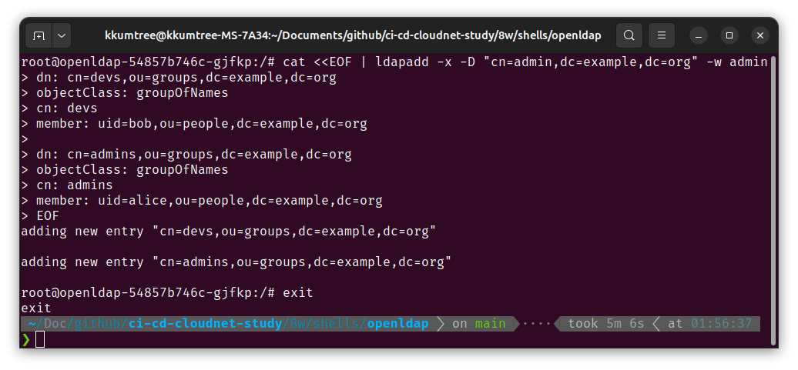
(2) LDAP 인증 활성화
이제 Vault에서 LDAP을 쓸 수 있게 활성화합니다.
OpenLDAP 배포 시, 포트 389번을 ldap 컨테이너에 연결하였기에 이를 사용합니다.
vault auth enable ldap
vault auth list
vault auth list -detailed
기본 인증으로 활성화된 token과 함께 ldap이 활성화된 것을 확인
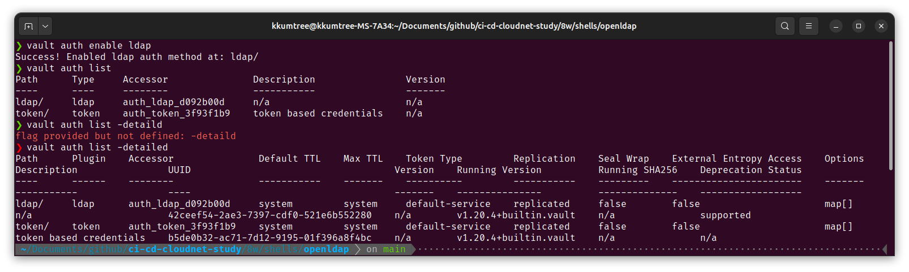
ldap 엔드포인트를 설정 후, 앞서 만들었던 alice 계정으로 접근해봅니다.
vault write auth/ldap/config \
url="ldap://openldap.openldap.svc:389" \
starttls=false \
insecure_tls=true \
binddn="cn=admin,dc=example,dc=org" \
bindpass="admin" \
userdn="ou=people,dc=example,dc=org" \
groupdn="ou=groups,dc=example,dc=org" \
groupfilter="(member=uid={{.Username}},ou=people,dc=example,dc=org)" \
groupattr="cn"
vault login -method=ldap username=alice
# 패스워드는 alice123 를 입력
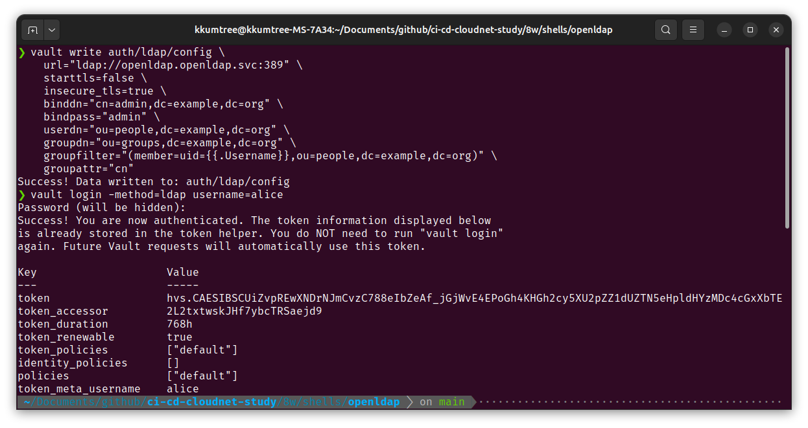
alice 계정에 적용된 정책 default가 적용되었음을 확인합니다.
다른 계정 bob으로 로그인 시, 토큰값이 바뀐 것을 확인합니다.
vault token lookup -format=json | jq .data.policies
vault token lookup
vault login -method=ldap username=bob password=bob123
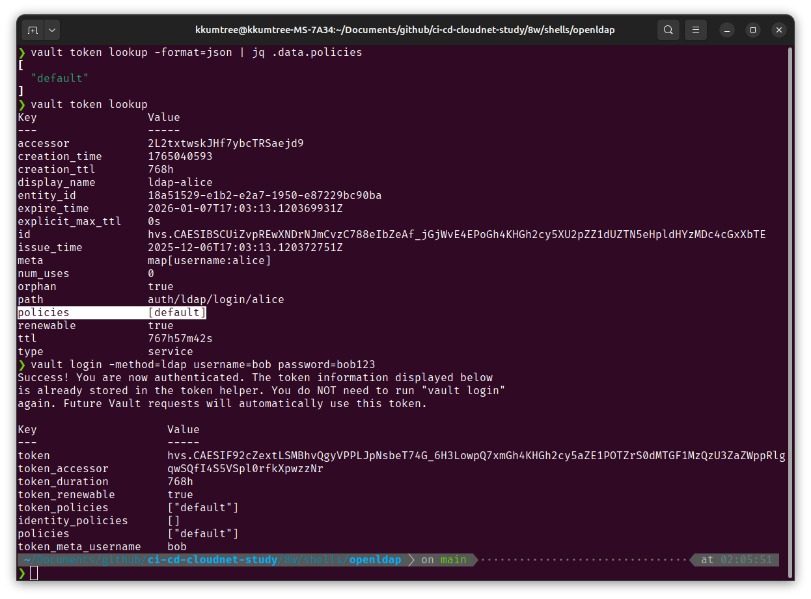
4. Datadog 메트릭 수집해보기
로컬 k8s 환경이라 이것저것 손좀 봐야되는게 있었지만,
그것보다도, Vault Helm Chart 셋업이 좀 혼동되는 부분이 있어 적어봅니다.
JWT토큰을 사용해서 할 수도 있는데, 이번에는 metric 엔드포인트만으로 가져올 수 있도록 합시다.
(1) Vault 재배포
8w/shells/vault/vault-ha-ot.sh
PV에 기존 설정값이 보존되어 있기에, 아래와 같이 Vault를 내립니다.
helm uninstall vault -n vault
이후 메트릭이 노출될 수 있도록 Vault의 Helm 차트를 설정해야되는데,
raft를 설정했다보니 어디를 설정해야할지 혼동되었었습니다.
설정이 잘 적용되지 않으면 prometheus 포맷에 대해 쿼리시, 아래처럼 Vault가 거부를 하니 유의.
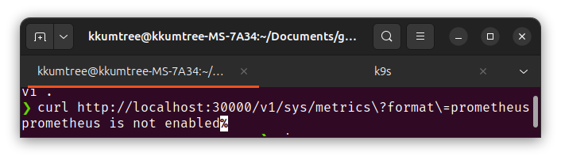
잠정적으로 내린 결론은 server.ha.raft를 활성화하기로 했다면,
server.ha.config 는 무시되는 것으로 보입니다.
Hashicorp Discourse랑 Vault Chart의 GitHub Issue를 참고했는데,
아주 명확한 해설은 없었고, 특히, GitHub의 values.yaml 주석이 제게는 애매했었습니다.
따라서 밑에 발췌해둔 server.ha.raft.config 부분을 참고해서,
- listener “tcp” 스탠자에 `unauthenticated_metrics_access = “true”
- 따로 telemetry 스탠자에 옵션을 설정합니다.
server:
ha:
raft:
config: |
listener "tcp" {
tls_disable = 1
address = "[::]:8200"
cluster_address = "[::]:8201"
# Enable unauthenticated metrics access (necessary for Prometheus Operator)
telemetry {
unauthenticated_metrics_access = "true"
}
}
telemetry {
prometheus_retention_time = "30s"
disable_hostname = true
}
config: |
listener "tcp" {
tls_disable = 1
address = "[::]:8200"
cluster_address = "[::]:8201"
telemetry {
unauthenticated_metrics_access = "true"
}
}
telemetry {
prometheus_retention_time = "30s"
disable_hostname = true
}
배포 후에는 Unseal 및 Join 작업을 통해 다시 설정합니다.
(2) Vault 내 ACL 설정
Hashicorp 및 Dataodog 문서에서는 HCL파일 기준으로 API를 통해 설정이 안내되어있으나,
UI로 이미 열려있으니 안에서 설정해두었습니다.
- 경로: Policies(ACL Policies) > default
API로 하면 Override 될 것 같았는데, 막상 보니 ACL을 여러파일로 겹치기가 되는 것으로 판단
path "sys/metrics*" {
capabilities = ["read", "list"]
}
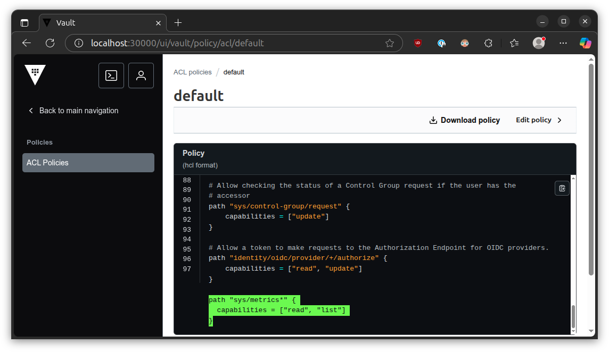
(3) Datadog 배포(Helm)
8w/shells/datadog 편의상 default 네임스페이스에 배포
먼저 API키를 고르고 시크릿을 만듭니다. API는 가려두었습니다.
helm repo add datadog https://helm.datadoghq.com
helm repo update
kubctl create secret generic datadog-secret --from-literal api-key=<DATADOG_API_KEY>
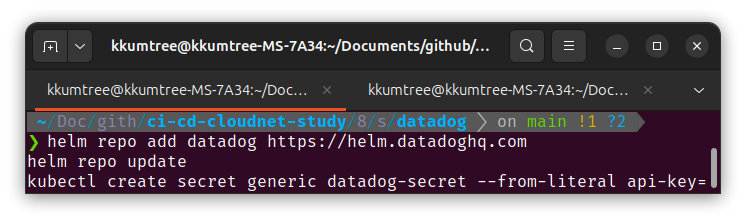
배포하기 전에 실습용 kind이므로 값을 손봐야합니다.
주요한 부분은 hostname 인식 쪽인데, 환경변수 설정을 통해 KIND 각 노드 이름으로 대체합니다.
kubelet에 대한 TLS 검증도 스킵.
이후는 datadog.confd에서 Auto Discovery를 활용하는 것인데,
요약하자면, yaml 파일을 직접 만들어 Datadog Pod가 읽도록 하는 방식입니다.
(물론 Vault 차트 배포 시, 어노테이션을 통해 인식하게 하는 방법도 있습니다. 기호에 맞게 취사선택)
datadog:
(..)
env:
- name: DD_HOSTNAME
valueFrom:
fieldRef:
fieldPath: spec.nodeName
confd:
vault.yaml: |-
ad_identifiers:
- vault
init_config:
instances:
- use_openmetrics: false
api_url: http://localhost:30000/v1
no_token: true
kubelet:
tlsVerify: false
(..)
다 작성했다면 배포
helm install datadog-agent -f datadog-values.yaml datadog/datadog
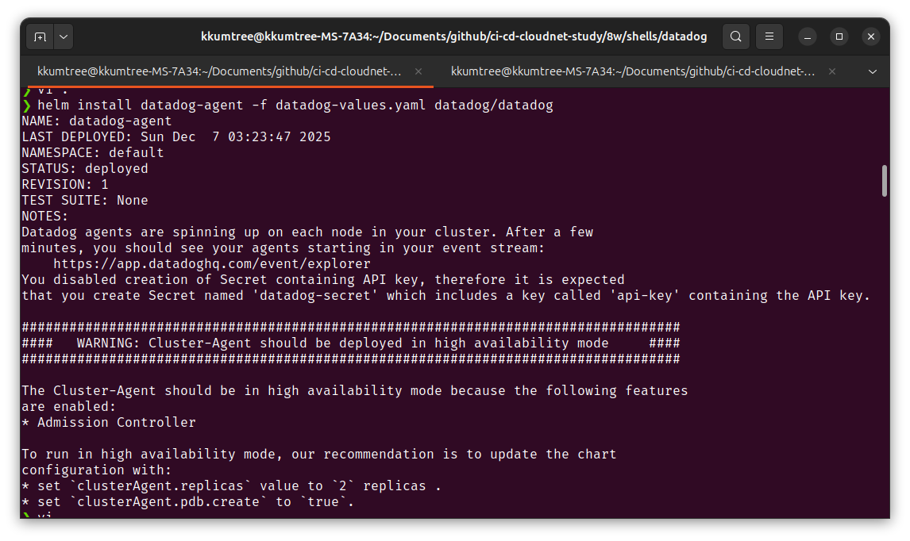
이후에는 대시보드에서 주요 메트릭을 확인할 수 있습니다.
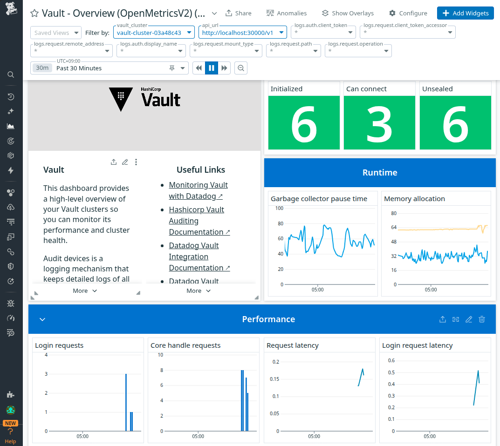
vault 배포의 경우에는 아래와 같이 기본적으로 확인가능 합니다.
(Stateful Set)
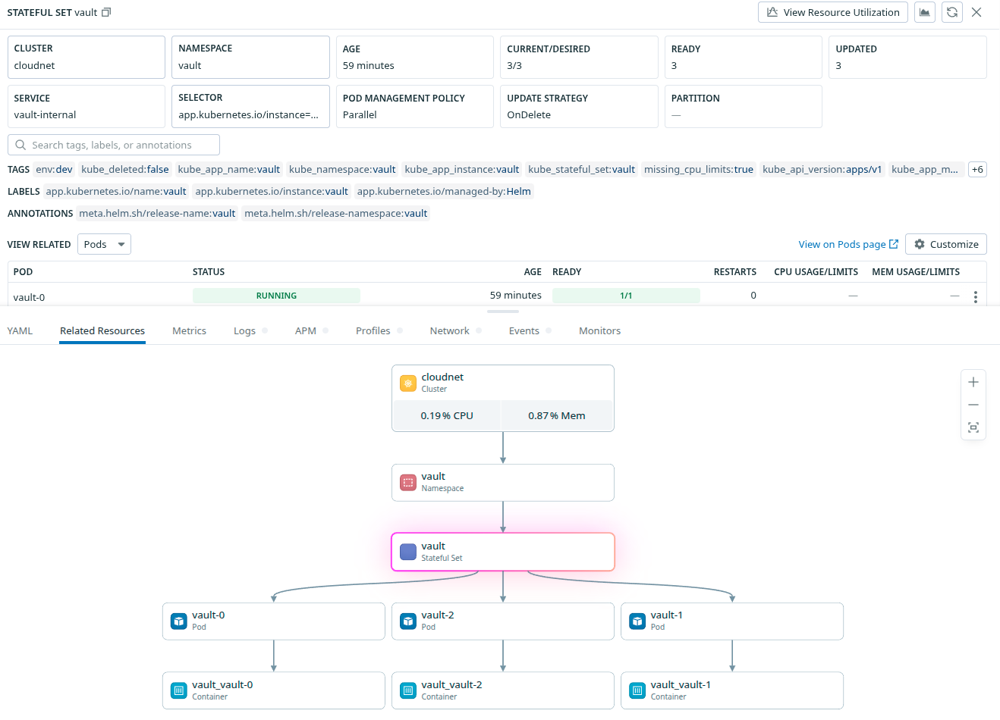
(Pod)
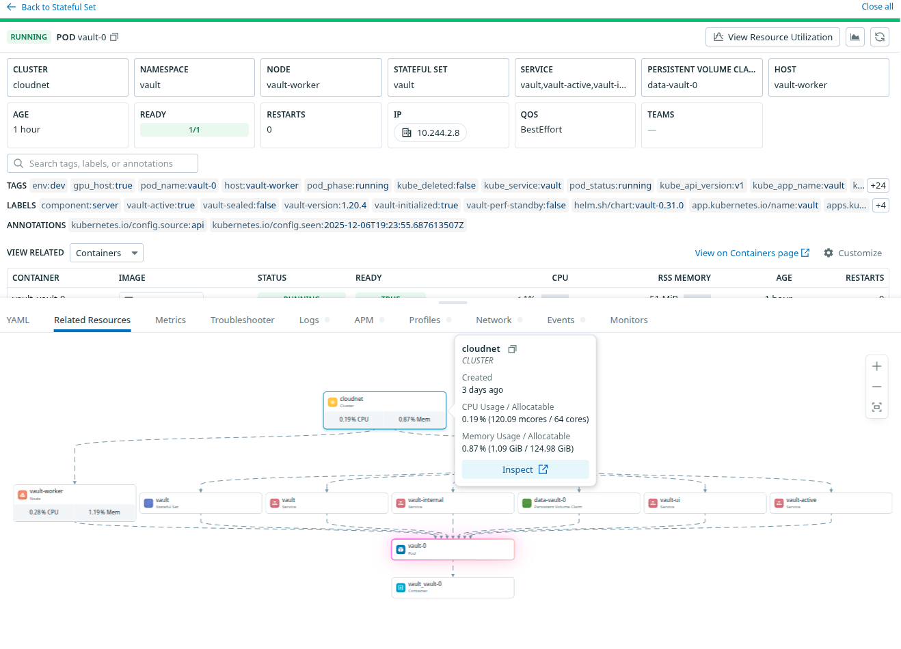
Reference
- vault-helm/values.yaml - GitHub
- Telemetry - Configuration | Vault
- TCP listener configuration | Vault
- What is the difference between ha.config and ha.raft.config in vault-helm values.yaml - Hashicorp Discuss
- Raft config override for Helm chart - Hashicorp Discuss
- prometheus is not enabled% #121 - GitHub(vault-helm)
- helm-charts/values.yaml - GitHub(Datadog)
- integrations-core/conf.yaml.example - GitHub(Datadog)
- Kubernetes and Integrations(Helm) - Datadog
- Vault - Datadog
- Monitoring Vault with Datadog | Vault
- Enable Vault telemetry | Vault

kkumtree
Source code on GitHub
© 2025 kkumtree and contributors All rights reserved.
Licensed under
CC BY-NC-ND 4.0